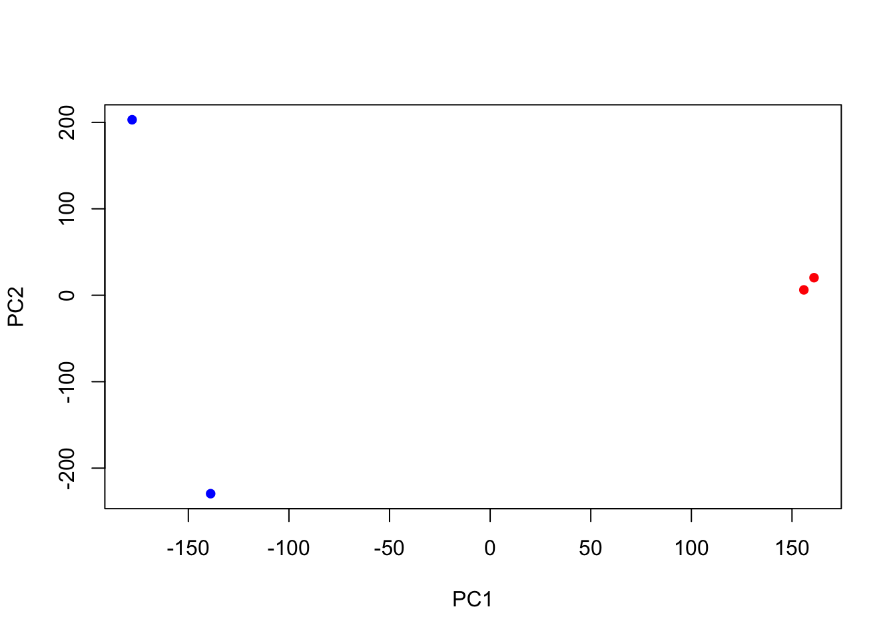
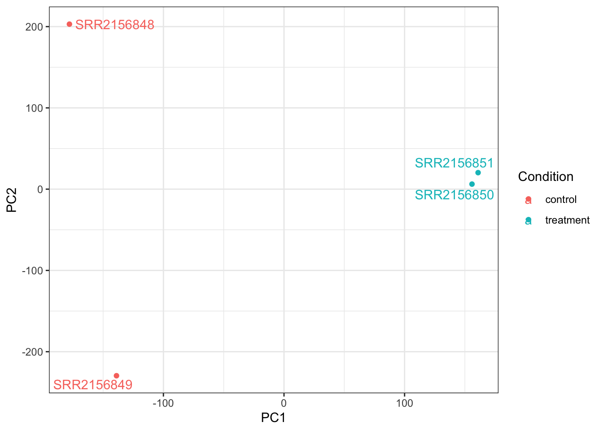

#Fill in the blank
#head(SRR2156848_1.fastq)Lab 16
Lab 16
- Working with R-Seq Data
Q. How would you check that these files with extension ‘.fastq’ actually look like what we expect for a FASTQ file? You could try printing the first few lines to the shell standard output:
Q. How could you check the number of sequences in each file?
# Fill in the blanks
#$ grep -c "SRR2156848_1.fastq" SRR2156848_1.fastq
2959900[1] 2959900Q. Check your answer with the bottom of the file using the tail command and also check the matching mate pair FASTQ file. Do these numbers match? If so why or why not?
Yes the numbers match; counting the sequence and finding the number of the last sequence yield the same result.
Q. Check you have pairs of FASTQ files for all datasets
#fill in the blank
#ls*.fastq- Transcription Quantification via Pseudoalignment
#Unzip and untar
#tar -zxvf kallisto_linux-v0.44.0.tar.gz
#Fill in the blank
#$ export path=$PATH:/home/ubuntu/kallisto_linux-v0.44.0 Q. Can you run kallisto to print out it’s citation information?
#$ kallisto cite#kallisto quant -i hg19.ensembl -o SRR2156849_quant SRR2156849_1.fastq SRR2156849_2.fastq
#kallisto quant -i hg19.ensembl -o SRR2156850_quant SRR2156850_1.fastq SRR2156850_2.fastq
#kallisto quant -i hg19.ensembl -o SRR2156851_quant SRR2156851_1.fastq SRR2156851_2.fastqQ. What do you notice about the TSV file contents? They contain target ID, length, eff_length, estimated counts
library(tximport)
library(rhdf5)
# setup the folder and filenames to read
folders <- dir(pattern="SRR21568*")
samples <- sub("_quant", "", folders)
files <- file.path( folders, "abundance.h5" )
names(files) <- samplestxi.kallisto <- tximport(files, type = "kallisto", txOut = TRUE)1 2 3 4 head(txi.kallisto$counts) SRR2156848 SRR2156849 SRR2156850 SRR2156851
ENST00000539570 0 0 0.00000 0
ENST00000576455 0 0 2.62037 0
ENST00000510508 0 0 0.00000 0
ENST00000474471 0 1 1.00000 0
ENST00000381700 0 0 0.00000 0
ENST00000445946 0 0 0.00000 0colSums(txi.kallisto$counts)SRR2156848 SRR2156849 SRR2156850 SRR2156851
2563611 2600800 2372309 2111474 sum(rowSums(txi.kallisto$counts)>0)[1] 94561to.keep <- rowSums(txi.kallisto$counts) > 0
kset.nonzero <- txi.kallisto$counts[to.keep,]keep2 <- apply(kset.nonzero,1,sd)>0
x <- kset.nonzero[keep2,]Principal Component Analysis
pca <- prcomp(t(x), scale=TRUE)
summary(pca)Importance of components:
PC1 PC2 PC3 PC4
Standard deviation 183.6379 177.3605 171.3020 1e+00
Proportion of Variance 0.3568 0.3328 0.3104 1e-05
Cumulative Proportion 0.3568 0.6895 1.0000 1e+00plot(pca$x[,1], pca$x[,2],
col=c("blue","blue","red","red"),
xlab="PC1", ylab="PC2", pch=16)
Q. Use ggplot to make a similar figure of PC1 vs PC2 and a seperate figure PC1 vs PC3 and PC2 vs PC3.
library(ggplot2)
library(ggrepel)
# Make metadata object for the samples
colData <- data.frame(condition = factor(rep(c("control", "treatment"), each = 2)))
rownames(colData) <- colnames(txi.kallisto$counts)
# Make the data.frame for ggplot
y <- as.data.frame(pca$x)
y$Condition <- as.factor(colData$condition)
ggplot(y) +
aes(PC1, PC2, col=Condition) +
geom_point() +
geom_text_repel(label=rownames(y)) +
theme_bw()
ggplot(y) +
aes(PC1, PC3, col=Condition) +
geom_point() +
geom_text_repel(label=rownames(y)) +
theme_bw()ggplot(y) +
aes(PC2, PC3, col=Condition) +
geom_point() +
geom_text_repel(label=rownames(y)) +
theme_bw()